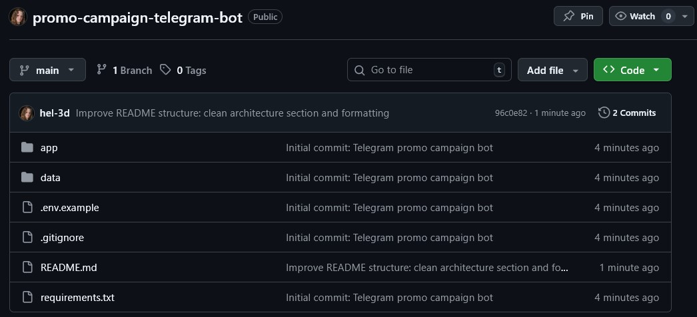
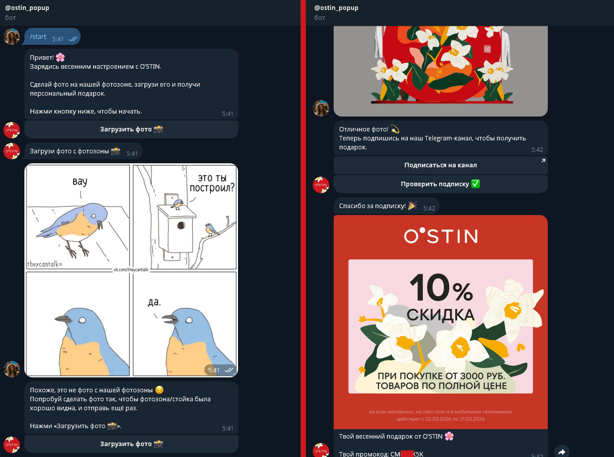

Telegram Promo Campaign Bot (Lunar Hare)
A promotional Telegram bot developed for a retail marketing campaign managed by Lunar Hare agency.
Users enter the flow through a QR code, upload a photo from a branded campaign photobooth, pass AI-based image verification, confirm subscription to the campaign Telegram channel, and receive a one-time promo code reward.
The system supports batch promo-code imports, stores issued rewards in SQLite, prevents duplicate distribution, and ensures that each participant receives only one assigned code during the campaign.
Architecture
ostin_qr_bot/ ├── README.md ├── requirements.txt ├── .env ├── app/ │ ├── bot.py │ ├── config.py │ ├── db.py │ ├── gpt_verify.py │ ├── keyboards.py │ └── promo.py ├── data/ │ ├── bot.db │ ├── codes_10.txt │ ├── codes_15.txt │ ├── codes_20.txt │ └── templates/ │ ├── gift_10.png │ ├── gift_15.png │ └── gift_20.png └── venv/
Compact campaign bot architecture with Telegram flow handling, SQLite promo storage, branded asset delivery, and GPT-based image verification.

Local project structure showing the Telegram bot modules, SQLite data storage, promo code files, and branded gift card templates used for the campaign.
Overview
This project was built for a retail marketing activation managed by Lunar Hare agency. Users entered the campaign by scanning a QR code placed on a physical promo stand and were then guided through the reward flow inside Telegram.
The bot asked the user to upload a photo from the branded campaign photobooth, verified that the image matched the expected environment, checked whether the user had subscribed to the required Telegram channel, and then issued a one-time promo code together with a matching branded reward image.
To support real campaign usage, the system stored assigned rewards in SQLite, prevented duplicate issuance, and made it possible to report how many promo codes had been distributed during the active promotion period.
What I Built
Core Features
- Telegram bot flow launched from a QR code placed on an offline promo installation
- Step-by-step user journey with photo upload, subscription check, and reward delivery
- AI-powered photo verification to distinguish the branded photobooth from unrelated images
- Randomized promo code issuance across multiple discount tiers
- SQLite-based storage for users, verification status, issued promo code, and issue timestamp
- One reward per user logic with repeat access returning the same previously assigned promo code
- Branded gift card image delivery matched to the assigned discount tier
- Batch promo code import from campaign-provided files
- Deployment on an external server for the duration of the live activation
Responsibilities
- Designed the full interaction flow for the campaign Telegram bot
- Implemented the bot using aiogram with callback-driven UI and FSM-based photo upload state
- Built promo code storage and issuance logic with SQLite and duplicate-protection rules
- Integrated GPT-based image verification to reduce abuse from unrelated image submissions
- Implemented subscription validation through Telegram channel membership checks
- Prepared the project for real campaign usage with branded assets, promo code batches, and deployment support
- Hosted the bot on my own external server because the client side did not have a technical deployment owner available at launch
- Provided launch support, debugging, final adjustments, and reporting readiness

Live bot interface showing the campaign flow, branded reward assets, and promo code delivery screens.
Technical Details
The bot was implemented in Python with aiogram and structured as a compact campaign service. The main flow handled Telegram commands, callback actions, photo uploads, subscription validation, and promo code delivery, while helper modules isolated configuration loading, database access, keyboard generation, promo import, and AI-based image verification.
User and reward data were stored in SQLite through an asynchronous data access layer. The database tracked whether a user had entered the flow, uploaded a valid photo, passed subscription verification, and already received a promo code. This made the campaign deterministic: each participant could receive only one reward, and repeated attempts returned the same previously assigned code instead of consuming a new one.
Promo codes were loaded from campaign-provided files and grouped by discount tier. When a user completed the flow, the bot selected an available code, assigned it to that user, marked it as used, and stored the assignment together with the timestamp and Telegram user ID. Matching branded reward images were then sent through Telegram as the final response.
To reduce abuse, I added GPT-based photo verification. The verification prompt was tuned to accept plausible campaign photobooth images even when partially blocked or photographed at an angle, while rejecting clearly unrelated submissions. This kept the flow user-friendly while still filtering out obvious misuse.
Because the client team did not have a dedicated engineer available for launch-time deployment, I hosted the bot on my own external server for the active campaign period and kept the project packaged for future reuse or extension.
Architecture / Workflow
- Step 1: The user scans a QR code placed on the physical promo stand.
- Step 2: The Telegram bot starts and asks the user to upload a photo from the campaign photobooth.
- Step 3: The bot sends the image to the verification layer, which determines whether the photo plausibly matches the expected campaign setup.
- Step 4: If the photo is accepted, the user is prompted to subscribe to the required Telegram channel.
- Step 5: The bot checks channel membership through the Telegram API.
- Step 6: After successful validation, the system assigns an unused promo code from the available pool and stores the result in SQLite.
- Step 7: The bot sends the user a branded reward image together with the assigned promo code.
- Step 8: On repeat attempts, the bot does not issue a new reward and instead reminds the user of the previously assigned code.
Challenges & Solutions
-
Challenge: Without image validation, users could upload any random photo and still receive a campaign reward.
Solution: I added GPT-based image verification tuned specifically for the branded campaign photobooth environment.
Result: The bot could distinguish plausible campaign photos from unrelated images and significantly reduced trivial abuse. -
Challenge: Telegram subscription status cannot be verified unless the bot has the correct channel visibility permissions.
Solution: I designed the flow around Telegram membership checks and coordinated launch validation to ensure the bot had the required admin-level visibility in the campaign channel.
Result: Subscription confirmation became part of the automated reward flow instead of a manual moderation step. -
Challenge: Promo code distribution had to avoid duplicate issuance and stay consistent across multiple reward tiers.
Solution: I built a SQLite-backed assignment system that tracked user state, selected only unused promo codes, and persisted the assigned code for repeat access scenarios.
Result: Each user received only one reward, while the campaign retained a clear distribution record. -
Challenge: The client side did not have a dedicated technical owner ready to deploy and support the project at launch time.
Solution: I deployed the bot on my own external server and stabilized the live version there for the active campaign period.
Result: The campaign could launch on schedule without waiting for separate infrastructure setup.
Result
The bot was completed and launched as a working campaign tool for a real retail activation. It supported the full promo journey: QR entry, photo upload, image verification, subscription confirmation, promo code assignment, and branded reward delivery.
By the end of the engagement, the solution was running on a live external server, issuing promo codes from prepared campaign pools, storing assignment history in the database, and preventing duplicate reward claims. The client also confirmed that the project could be shown in portfolio materials with Lunar Hare agency attribution.
This project demonstrates my ability to build compact production-ready Python systems for real-world marketing workflows: fast delivery, practical deployment, AI-assisted verification, stateful reward logic, and stable handling of client-side operational constraints.
The bot was approved for live use in the campaign and deployed for the active promotional period. After launch, the client also requested visibility into issued promo code counts and weekly follow-up reporting.
Portfolio mention was explicitly allowed with Lunar Hare agency attribution and without direct brand tagging in social media posts.